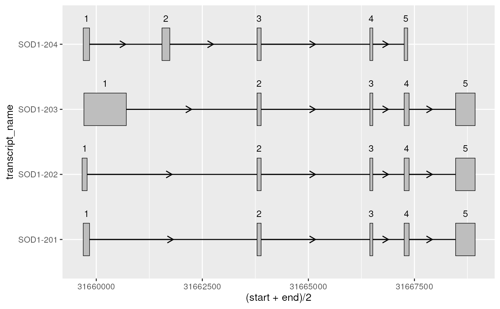
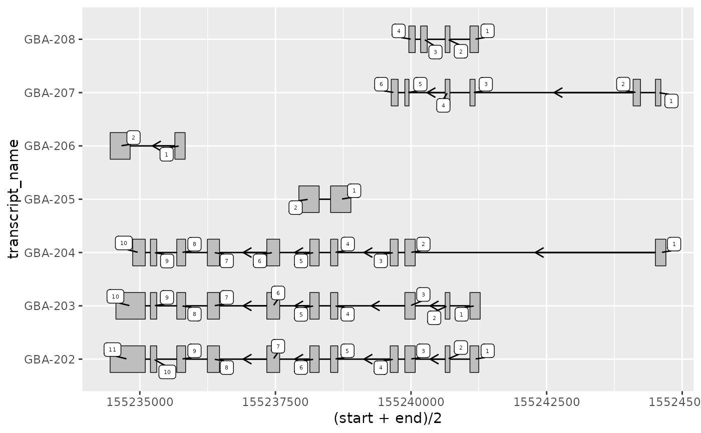
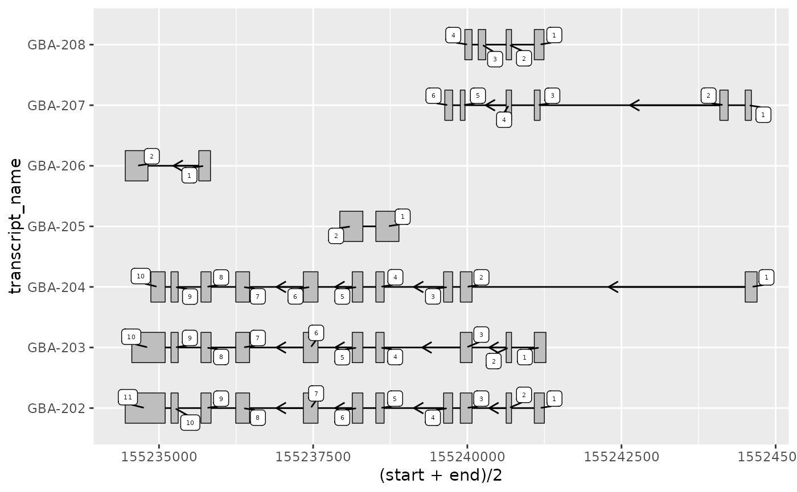

add_exon_number() adds the exon number (the order the exons are transcribed
within each transcript) as a column in exons. This can be useful when
visualizing long, complex transcript structures, in order to keep track of
specific exons of interest.
add_exon_number(exons, group_var = NULL)Arguments
- exons
data.frame()contains exons which can originate from multiple transcripts differentiated bygroup_var.- group_var
character()if input data originates from more than 1 transcript,group_varmust specify the column that differentiates transcripts (e.g. "transcript_id").
Value
data.frame() equivalent to input exons, with the additional
column "exon_number".
Details
To note, a "strand" column must be present within exons. The strand is used
to differentiate whether exon numbers should be calculated according to
ascending ("+") or descending ("-") genomic co-ordinates. For ambiguous
strands ("*"), add_exon_number() will be assumed the strand be "+".
Examples
library(magrittr)
gba_ens_105_exons <- gba_ens_105 %>%
dplyr::filter(
type == "exon",
transcript_name %in% paste0("GBA-20", 2:8)
)
gba_ens_105_exons
#> # A tibble: 45 × 8
#> seqnames start end strand type gene_name transcript_name
#> <fct> <int> <int> <fct> <fct> <chr> <chr>
#> 1 1 155241086 155241249 - exon GBA GBA-202
#> 2 1 155240630 155240717 - exon GBA GBA-202
#> 3 1 155239886 155240077 - exon GBA GBA-202
#> 4 1 155239616 155239762 - exon GBA GBA-202
#> 5 1 155238517 155238650 - exon GBA GBA-202
#> 6 1 155238134 155238306 - exon GBA GBA-202
#> 7 1 155237341 155237578 - exon GBA GBA-202
#> 8 1 155236245 155236469 - exon GBA GBA-202
#> 9 1 155235681 155235844 - exon GBA GBA-202
#> 10 1 155235195 155235311 - exon GBA GBA-202
#> # … with 35 more rows, and 1 more variable: transcript_biotype <chr>
gba_ens_105_exons %>%
add_exon_number(group_var = "transcript_name")
#> # A tibble: 45 × 9
#> seqnames start end strand type gene_name transcript_name
#> <fct> <int> <int> <fct> <fct> <chr> <chr>
#> 1 1 155234452 155235100 - exon GBA GBA-202
#> 2 1 155235195 155235311 - exon GBA GBA-202
#> 3 1 155235681 155235844 - exon GBA GBA-202
#> 4 1 155236245 155236469 - exon GBA GBA-202
#> 5 1 155237341 155237578 - exon GBA GBA-202
#> 6 1 155238134 155238306 - exon GBA GBA-202
#> 7 1 155238517 155238650 - exon GBA GBA-202
#> 8 1 155239616 155239762 - exon GBA GBA-202
#> 9 1 155239886 155240077 - exon GBA GBA-202
#> 10 1 155240630 155240717 - exon GBA GBA-202
#> # … with 35 more rows, and 2 more variables: transcript_biotype <chr>,
#> # exon_number <dbl>
# this can be useful to label exons with their order/number
base <- gba_ens_105_exons %>%
add_exon_number(group_var = "transcript_name") %>%
ggplot2::ggplot(
ggplot2::aes(
xstart = start,
xend = end,
y = transcript_name
)
) +
geom_range() +
geom_intron(
data = to_intron(gba_ens_105_exons, "transcript_name"),
strand = "-",
arrow.min.intron.length = 500
)
base +
ggplot2::geom_text(ggplot2::aes(
x = (start + end) / 2, # plot label at midpoint of exon
label = exon_number
),
size = 1.5
)

# for complex transcript structures or small exons, it can be useful to
# set nudge_y to plot exon numbers above their respective exons
base +
ggplot2::geom_text(ggplot2::aes(
x = (start + end) / 2, # plot label at midpoint of exon
label = exon_number
),
size = 2.5,
nudge_y = 0.4
)
 # or use ggrepel::geom_label_repel to separate labels from exons
base +
ggrepel::geom_label_repel(ggplot2::aes(
x = (start + end) / 2,
label = exon_number
),
size = 2,
min.segment.length = 0
)

# or use ggrepel::geom_label_repel to separate labels from exons
base +
ggrepel::geom_label_repel(ggplot2::aes(
x = (start + end) / 2,
label = exon_number
),
size = 2,
min.segment.length = 0
)
